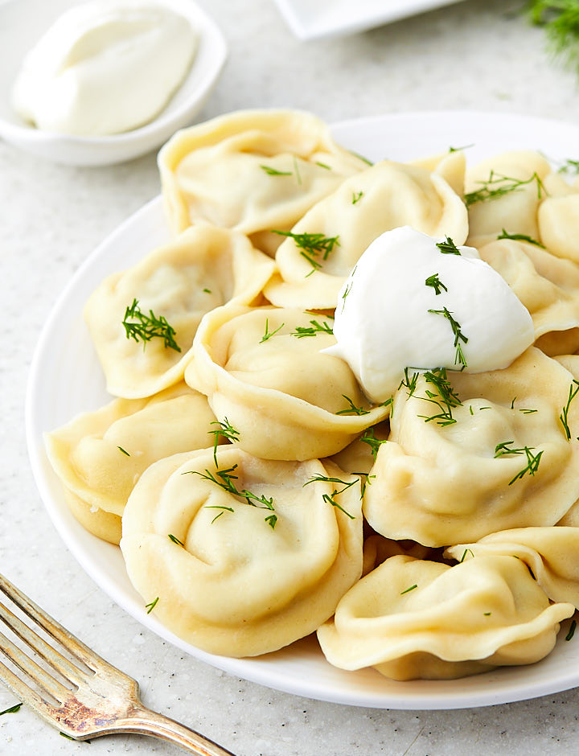

Pelmeni

Decription
Every Russian adores this delicious meal.
Let's find out how to prepare Pelmeni - a traditional delicacy!
Ingredients:
- 450g ground beef
- 1 small onion, finely chopped
- 2 cloves garlic, minced
- Salt and pepper
- Water
- Sour cream and/or melted butter
Steps:
- Mix beef, onion, garlic, salt and pepper.
- Fill dumpling wrappers and seal.
- Boil pelmeni for 5-7 mins.
- Serve with sour cream or melted butter. Enjoy!